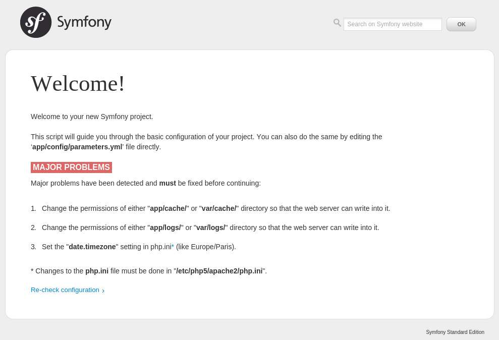
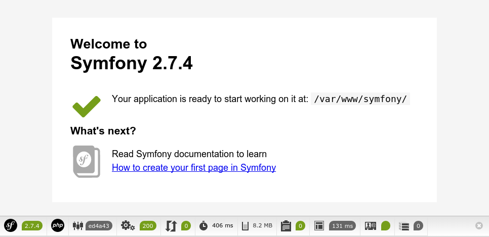

Pré-requis et installation du framework¶
Avant de commencer
Cette procédure est donnée pour une installation sur une Ubuntu 14.04. En fonction de la version d’Ubuntu ou de la distribution utilisée, les paquets à installer peuvent être différents.
Pré-requis¶
- PHP doit être au minimum à la version PHP 5.3.3
- JSON doit être activé
- ctype doit être activé
- Votre PHP.ini doit avoir le paramètre date.timezone défini
Installation de MySQL¶
sudo apt-get install mysql-server mysql-client
Installation d’Apache¶
sudo apt-get install apache2
Installation de librairies et outils supplémentaires¶
sudo apt-get install curl git
Installation et configuration de PHP¶
sudo apt-get install php5 php5-cli php5-intl php5-xsl php5-curl php5-mysql
Dans les fichiers de configuration de PHP, ajoutez la timezone :
# /etc/php5/apache2/php.ini
date.timezone = Europe/Paris
# /etc/php5/cli/php.ini
date.timezone = Europe/Paris
Attention
php.ini pour changer en fonction des distributions Linux utilisées.php.ini :/etc/php5/apache2/php.ini utilisé par Apache et qui nécessite un redémarrage d’Apache à chaque modification pour qu’elle soit prise en compte./etc/php5/cli/php.ini utilisé la commande php.memory_limit, d’autres doivent être identiques comme le date.timezone.Comme on est sur un poste de développement, on installe xDebug :
sudo apt-get install php5-xdebug
xDebug permet de faire plus de contrôle sur l’exécution du code PHP et remonte des erreurs que ne remonte pas PHP par défaut. xDebug contrôle entre autre la profondeur des fonctions appelés et le limite par défaut à 100, ce qui pose problème avec :program`Symfony`. il faut donc modifier la configuration de XDebug pour augmenter cette limite :
# /etc/php5/apache2/conf.d/20-xdebug.ini
xdebug.max_nesting_level = 250
Correction des droits sur les fichiers¶
Afin d corriger les droits sur les fichiers une bonne fois pour toute :
Ajoutons l’utilisateur d’Apache (
www-data) dans notre groupesudo usermod -a -G www-data $(whoami)Ajoutons dans le groupe
www-datasudo usermod -a -G $(whoami) www-dataForçons les droits à 775 pour tous les nouveaux fichiers créés par notre utilisateur
# ~/.profile ... # umask 002 pour passer les permission de fichiers à 0664 et de dossiers à 0775 umask 002
Rechargeons notre profil
source ~/.profileFaisons de même pour www-data
# /etc/apache2/envvars ... # umask 002 pour passer les permission de fichiers à 0664 et de dossiers à 0775 umask 002
Redémarrons Apache
sudo service apache2 restartDonnons les droits à
www-datad’écrire dans le répertoire/var/wwwpour y déposer nos projets :sudo chown www-data:www-data -R /var/www sudo chmod g+w -R /var/www
$ ls -l /var/www total 4 drwxrwxr-x 2 www-data www-data 4096 mai 18 13:09 html
Installation de Symfony¶
Deux méthodes existent pour télécharger et installer Symfony :
- Via le site de Symfony http://symfony.com/download
- Via Composer
Nous allons préféré la seconde.
Téléchargement de Symfony¶
Dans un premier temps, installons Composer :
cd /var/www
curl -sS https://getcomposer.org/installer | php
Indice
Si vous avez besoin d’aide pour utiliser Composer, la commande php composer.phar -h pourra vous en fournir.
Ensuite, on utilise Composer pour télécharger Symfony, et on déplace le fichier composer.phar dans le répertoire d’installation de Symfony :
cd /var/www
php composer.phar create-project symfony/framework-standard-edition ./symfony
mv composer.phar Symfony
Composer va télécharger et installer toutes les librairies nécessaires au fonctionnent de Symfony dans le répertoire /var/www/symfony.
À la fin l’installation, Composer vous propose une série de question pour initialiser le paramétrage Symfony :
Creating the "app/config/parameters.yml" file
Some parameters are missing. Please provide them.
database_host (127.0.0.1):
database_port (null):
database_name (symfony):
database_user (root): symfony
database_password (null): symfony_pass
mailer_transport (smtp):
mailer_host (127.0.0.1):
mailer_user (null):
mailer_password (null):
secret (ThisTokenIsNotSoSecretChangeIt):
Note
[y/N] représente la réponse par défaut dans une réponse oui/non, ici non.database_driver (pdo_mysql):, est la valeur par défaut pour les question ouvertes.Tous ces paramètres sont enregistrés dans le fichier app/config/parameters.yml.
Pour finir, déplacez le fichier composer.phar dans le répertoire de Symfony :
cd /var/www
mv composer.phar symfony/
Mise en place du VHost¶
Le VHost, ou Virtual Host, est un paramétrage au niveau du serveur web pour qu’il oriente les requêtes HTTP entrantes vers la bonne application.
Dans un premier temps, nous allons créé un hostname qui nous permettra s’accéder à notre application :
# /etc/hosts
127.0.1.1 symfony.loc.epsi.fr
Ensuite, on crée le Vhost :
# /etc/apache2/sites-available/symfony.conf
<VirtualHost *:80>
ServerName symfony.loc.epsi.fr
DocumentRoot /var/www/symfony/web
<Directory /var/www/symfony/web>
AllowOverride All
Require all granted
</Directory>
ErrorLog /var/log/apache2/symfony.loc.epsi.fr_error.log
CustomLog /var/log/apache2/symfony.loc.epsi.fr_access.log combined
</VirtualHost>
Pour finir, on active le VHost et on recharche Apache :
sudo a2ensite symfony.conf
sudo service apache2 reload
Vérifier votre configuration de PHP¶
Allez à l’adresse http://symfony.loc.epsi.fr/config.php.
Si vous avez des problèmes de configuration ou de droits, vous verrez cette page :
Corrigez tous les problèmes avant de continuer :
Change the permissions of either “app/cache/” or “var/cache/” directory so that the web server can write into it.
chmod -R 777 app/cache/Change the permissions of either “app/logs/” or “var/logs/” directory so that the web server can write into it.
chmod -R 777 app/logs/Set the “date.timezone” setting in php.ini* (like Europe/Paris).
# /etc/php5/apache2/php.ini date.timezone = Europe/Paris# /etc/php5/cli/php.ini date.timezone = Europe/ParisSet “xdebug.max_nesting_level” to e.g. “250” in php.ini
# /etc/php5/apache2/conf.d/20-xdebug.ini xdebug.max_nesting_level = 250
L’installation de Symfony est terminée lorsque vous affichez cette page :

Rendez-vous sur la page http://symfony.loc.epsi.fr/app_dev.php/, vous devriez voir cette page :
Vérifier la configuration de PHP en console¶
Pour gagner du temps, vous aurez besoin d’exécuter des commandes PHP via la console, vérifions donc que la configuration de PHP soit correcte :
cd /var/www/symfony
php app/check.php